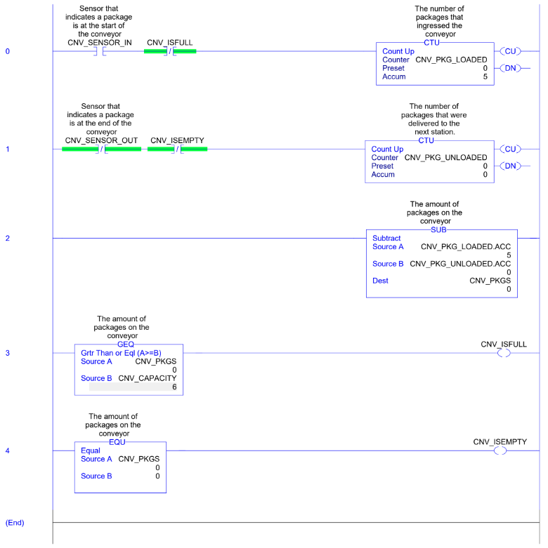
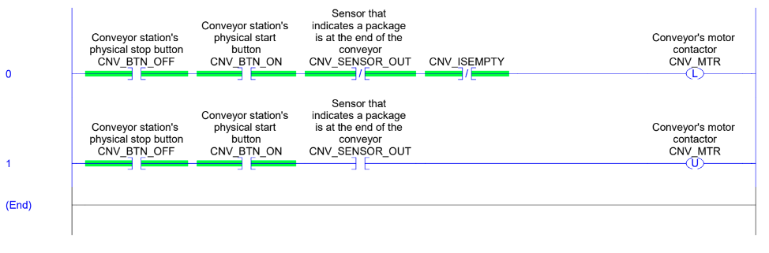
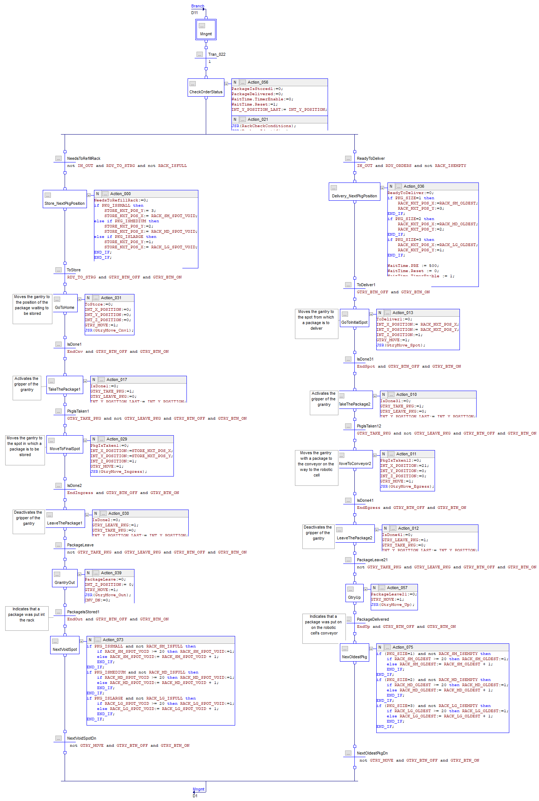
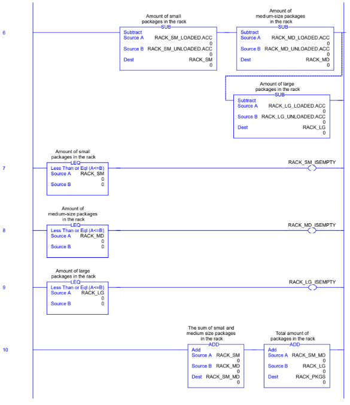
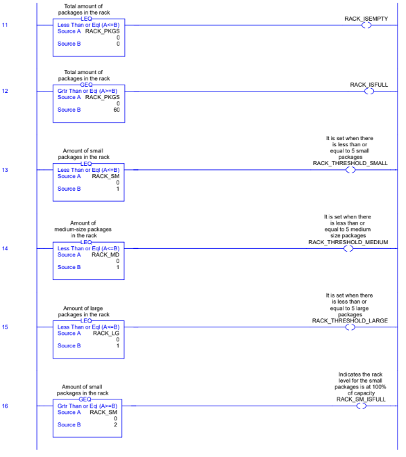
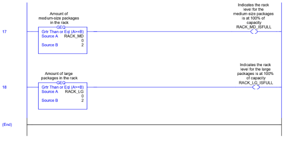

Los requerimientos relevante del proyecto para la seleeción del controlador apropiado son los siguientes:
Serán 3 señales análogas de salida para hacer control de los 3 ejes del gantry.
En su mayoría, las señales serán de naruraleza digital para:
Se comunicará con un PC local el cuál tendrá un SCADA Local, por lo que esta comunicación se hara mediante Ethernet/IP.
De acuerdo con el anterior dimensionamiento, solo se necesita un controlador industrial. Haciendo un análisis de la familia de productos marca AllenBradley, se escogió la familia de CompactLogix 5380, debido a las siguientes características:
Haciendo una selección más detallada, la cantidad de señales para control de movimiento se vuelve definitiva a la hora de escoger una referencia. Se escogió el CompactLogix 5069-L330ERM, el cual tiene las siguientes características:
El problema de control secuencial se puede dividir en 2 subproblemas:
La banda transportadora se moverá siempre y cuando no esté vacía pero no haya un paquete al final. Como no depende de otra rutina, y genera las condiciones para el otro subproblema, se determinó programarlo como rutinas independientes en Ladder y ejecutadas por la rutina principal (MainRoutine).
Esta lógica consta de dos rutinas:


El gantry estará atendiendo dos bandas transportadoras, una que suple paquetes al rack y otra que lleva paquetes del rack a la celda robotizada. Además, será gobernado por los estados y flags que actualiza una rutina similar a CnvPackageCount.
Esta lógica consta de dos rutinas:




created with
HTML Creator .